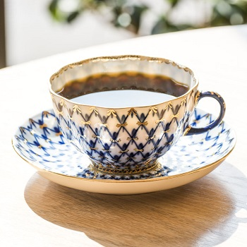
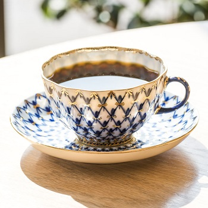

커피의 세계
 


- 상품명 : 에티오피아 게뎁
- 판매가 : 9,000원
- 배송비 : 3,000원
(50,000원 이상 구매시 무료) - 적립금 : 180원(2%)
- 로스팅 : 2019.06.17
상품 상세 정보
- 원산지 : 에티오피아
- 지역 : 이르가체프 코체레
- 농장 : 게뎁
- 고도 : 1,950 ~ 2,000 m
- 품종 : 지역 토착종
- 가공법 : 워시드
Information
2차 세계대전 이후 설립된 게뎁 농장은 유기농 인증농장으로 여성의 고용 창출과 지역사회 발전에 기여하며 3대째 내려져오는 오랜 역사를 가진 농장입니다. 게뎁 농장은 scaa인증을 받은 커피 품질관리 실험실을 갖추고있어 철저한 관리를 통해 스페셜티 커피를 생산해냅니다.
Flavor Note
은은하고 다채로운 꽃향, 망고, 다크 체리, 달달함이 입안에 가득.